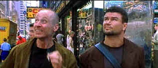

| 15 Minutes (SE)/ B,A |
| New Line/2001/121/ANA 2.35 |
 I have to admit I was not enjoying 15 Minutes too much until I
let my laughter loose. Pull up a second here boy: do you mean to say this violence
filled flick obsessed with the media is the blackest of black comedies? Having seen John Herzfeld's
fine first film several years ago, 2 Days in the Valley,
you've gotta believe this writer/director has every intention of making you laugh. The free-flowing
wild ride of 2 Days works a lot better than 15 Minutes because this viewer at least
was too unsure of how to feel. But when a savvy filmmaker puts ridiculous characters in ridiculous
situations, it's you're mistake not to go with the flow from the get-go.
I have to admit I was not enjoying 15 Minutes too much until I
let my laughter loose. Pull up a second here boy: do you mean to say this violence
filled flick obsessed with the media is the blackest of black comedies? Having seen John Herzfeld's
fine first film several years ago, 2 Days in the Valley,
you've gotta believe this writer/director has every intention of making you laugh. The free-flowing
wild ride of 2 Days works a lot better than 15 Minutes because this viewer at least
was too unsure of how to feel. But when a savvy filmmaker puts ridiculous characters in ridiculous
situations, it's you're mistake not to go with the flow from the get-go.
 |
| Just a couple of New York tourists. ©New Line |
A pair of crooks bumble their way through immigration at Kennedy Airport
arriving in New York to claim their share from a robbery five years ago. Emil and Oleg are the
Laurel and Hardy of bad boys. Times Square ignites their imaginations of the American way. Oleg, a
would-be film director in his own mind, steals a digital video camera and begins recording the
pair's every move. When their former partner does not come up with the cash, Emil explodes
with rage, slits some throats and decides to hide the evidence in rush of flames. It's just the beginning of killing and arson spree.
Famous homicide detective Eddie Fleming is called to investigate the murders and
arson investigator Jordy Warsaw arrives to check out the cause of the blaze. Elements of buddy
banter surface but never bubble over. Fleming and Warsaw work together but separately in pursuit of
the killers. Writer/director Herzfeld provides some shocking surprises as the killers pursue their
own dreams of the American way.
Close to Eddie and the action, Robert Hawkins, the host of tabloid television
news show Top Story, looks for ways to pump up the ratings. Hawkins will go as far as he has to to
secure an exclusive.
Herzfeld undertakes the difficult job of balancing broad humor and visceral
violence with a great deal of courage. It might not always work, but at least the writer/director
is not afraid to step up to the plate and takes his swings. And it's a free-swinging riff indeed,
taking satiric swipes at almost everyone in sight. Herzfeld mixes in an effective touch of romance
for Fleming with television news reporter Nicolette Karas and Jordy finds a material witness very
appealing.
Karel Roden and Oleg Taktarov practically steal the show from some of their
better known actors co-stars. Playing the psycho Eastern Europeans with fiery flare, they are both
frightening and funny. Fleming is far from a stretch for star Robert De Niro. The actor knows this
territory very well and makes it look very easy. There's an edge of bigger than life in DeNiro's
performance, almost in silent acknowledgement to the comic elements int he script. Ed Burns
is brave and a bit too straight-laced as Jordy Warsaw. Kelsey Grammer seems comfortable dressed as
Hawkins.
A splendid transfer in every respect, 15 Minutes never stops
delivering sparkling images with every depraved detail revealed in gloriously garish color. Check
out the explosion of color in the Times Square scenes. Each color defines its own space
brilliantly. Black levels are dynamic in the interior fire sequences. Fire engine reds are reflect
the action with unusual brilliance. There's no enhancement around the edges and every object is
meticulously detailed. The wonderfully active Dolby Digital 5:1 surround mix captures the ambiance of the bustling city.
Another entry in New Line's Infinifilm series, 15 Minutes is chock full of
extras. John Herzfeld's audio commentary is articulate and informative expressing artistic intent
and revealing technical details. Oleg's Videos are fascinating to watch. Deleted scenes are
available with and without commentary by Herzfeld. Two peripheral documentaries concerning the
media and crime are included as well. You can watch the film Infinifilm style with appropriate
extras highlighted for digression or check out the extras after viewing the film.

Selections from the Feature Archive include articles on
Akira Kurosawa, Blonde Bimbos,
Frank
Darabont, Steven
Culp, John
Herzfeld or Vietnam: The
Hollywood Pariah, and many more....
Director Walks the Wire
Balanced by an armor of movie lore and filmmaking daring, director John Herzfeld is comfortable
walking the high wire. Check out this interview by Stu Kobak.

The Movie Poster Archive include extensive poster images from the films of stars like Susan Hayward, Kirk Douglas, Katharine Hepburn and many more. Our featured star is Burt Lancaster.

Choko
Movie Posters

The popular Paris movie poster store
makes it's way to the Internet with an outstanding selection of French Movie Posters. Many
beautiful images on display in a searchable data base.

The official site for information about the great comic director. A treat for connoisseurs of
classic Hollywood madcap.
MRQE
Find reams of movie and DVD reviews at the Movie Review Query Engine, a index of reviews appearing on the Internet.

ISF Monitor Calibrations in the
Tristate New York area. Lots of hardware info and frequent hardware peaks from video expert Kevin
Miller.They may be judgmental, but that's the point, isn't it. Lots of DVD reviews plus news and
more.
 Have you visited Home Theater
Talk lately? One of the friendliest places on the Net for Home Theater and DVD discussion, you
can get help for installation problems or simply share your opinions with other Vidiots.
Have you visited Home Theater
Talk lately? One of the friendliest places on the Net for Home Theater and DVD discussion, you
can get help for installation problems or simply share your opinions with other Vidiots.